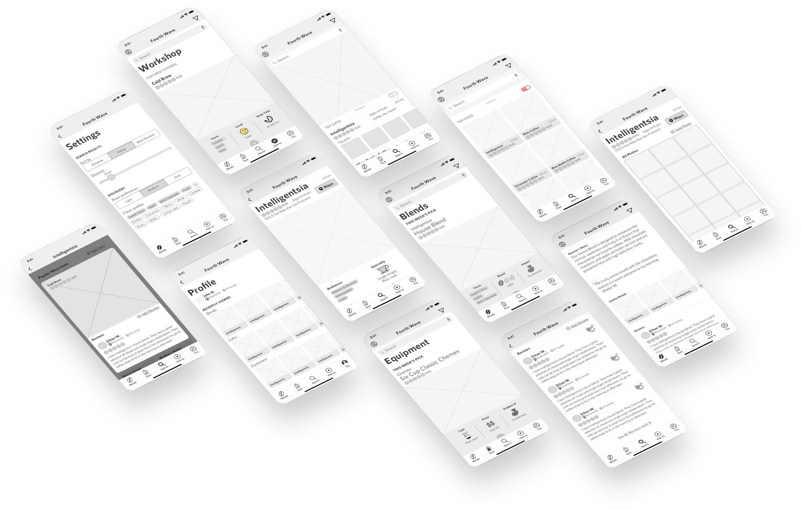

Summary
Fourth Wave curates top artisan coffee blends, brewing gear, cafes, and recipes for coffee aficionados.
| Roles | Deliverables | Tools | Competitive Analysis | Lo-Fi/Hi-Fi Mockups | Pen & Paper |
|---|---|---|
| Research & Design | Clickable Prototype | Illustrator |
| Content Strategist | Imagery & Icons | InVision |
| Brand Creator | Logo & Type | Sketch |
| Roles |
|---|
| Competitive Analysis Research & Design Content Strategist Brand Creator |
| Deliverables |
| Lo-Fi/Hi-Fi Mockups Clickable Prototype Imagery & Icons Logo & Type |
| Tools |
| Pen & Paper Illustrator InVision Sketch |
The Problem
There’s no guided source to bridge the market gap between roasters and consumers.
Third wave coffee brands come in the hundreds. Consumers have no means to discover and compare top-shelf blends and products. Most users just find new roasts by seeing them in cafes, word of mouth, or by pure chance.
The Solution
Top coffee blends, the best brewing gear, and exciting recipe tutorials.

Blend Feed
Flavor profiles, roast intensity, and a sourcing data to find the perfect roast
Brew Gear
Gear type, pricing, product source, and buy CTAs help find the best gear
Local Cafes
Local search for nearby cafes with tile & list view to optimize your search
Cafe Insight
Ratings, reviews, and photos shared within a community of aficionados
The Design Process
Research & Discovery
I surveyed 20 individuals to identify user priorities, frustrations, preferences, and common practices. I use success factors to scope target audience, product direction, and brand identity.
Pain Points
How do users discover new roasts?
Most users just find new roasts by simply bumping into them. There’s no guided source to help tailored discovery. An app would be very handy here to discover the best coffee to anyone.
Success Factors
What insight is most helpful?
Flavor profiles is the landslide winner to helping users know what they’re looking at without even tasting or smelling. Following leads are types of roasts, where they’re imported, menu lists, and reviews coming in last.
User Personas
Having understood the market, I visualized the potential consumers with user personas to give context to real world scenarios.
Jake |
Emma |
Trey |
| 28 Carlsbad, CA Photographer |
24 Seattle, WA Marketing Manager |
33 San Francisco, CA SEO Manager |
| Bio | ||
|---|---|---|
| Jack is a nature-bound explorer who loves long drives to the mountains or lakes with a few friends for a weekend trip. He’s an early riser and loves the brisk air paired with a freshly brewed cup of pour-over coffee. | Emma is a social media marketer with a vibrant social life. When one of her teammates brings a new blend, everyone is excited to try and share together. It brings her closer to her colleagues and provides a nice fresh aroma to her workplace. | Trey enjoys the ambience of speak-easies and local cafes as well. This is where he catches up on news, replies to emails, and watches yesterdays ESPN highlights. He enjoys medium or dark roast for it’s complexity and robust flavoring. |
| Goals | ||
|
|
|
| Needs | ||
|
|
|
Emma |
||
| 24 Seattle, WA Marketing Manager |
||
| Bio | ||
|---|---|---|
| Emma is a social media marketer with a vibrant social life. When one of her teammates brings a new blend, everyone is excited to try and share together. It brings her closer to her colleagues and provides a nice fresh aroma to her workplace. | ||
| Goals | ||
|
||
| Needs | ||
|
||
Varying ages, roles, goals, and needs paints a broader picture of our target audience, which means more points for adjustment to tailor our product.
User Stories
With our personas in mind, I created a list of common use cases in the form of user stories. Every story tells of a mini journey but not all stories are born equal. Thus, I categorize task by priority and user type.
| High |
|---|
| As a returning user, I want to scroll through list of popular roasts with flavor profile, ratings, and reviews to quickly explore and discover the best coffee roasts quantitatively. |
| Medium |
| All Users would like to edit live and view collaborative activity real time with color coded type line and change footprints. |
| Low |
| All Users would like to view version history to understand changes between two files. |
| High | Medium | Low |
|---|---|---|
| As a returning user, I want see flavor profiles, ratings, and reviews to quickly discover the best coffee blends quantitatively. | As a returning user, I want to browse cafes and roasteries with a rated and reviewed menu so I know which coffees are recommended. | As a returning user, I want to be able to upvote reviews and ratings on coffee, equipment, and cafes so I can voice my opinion and contribute. |
Priority dictates hierarchy, architecture, flow, and visual design. A minimum viable product is the initial goal so users first get what they need, then add nice-to-haves in succession.
User Flows
The app is one big system made of little systems that talk to each other. Drafting the logical flow between action and result is the first step to architecting an effective experience.
Blend & Gear feeds
Bare bones flow diagrams quickly reveal key decision points and unnecessary steps. Simplicity, accessibility, and efficiency are the goals. This means reducing steps, cross-referencing nodes, and grouping by common denominators.
Wireframes
Sketch
The product structure is born into a series of content frames to get a real world interaction between user and data. Flows are translated to mockups where users can quickly buy online, find local cafes, view product details, and see reviews.

For discovery, I featured large photos accompanied with key relevant data. For blends, users are most interested with how it tastes - this is captured by flavor profiles, roast intensity, and imported source.
Hi-Fi Mockups
Sketch
I dive deeper into the visual details to promote the experience, brand, and visual cues. I use a consistent color scheme of blue and yellow to promote brand imagery.
Crisp images are the centerpiece which translate meaning, therefore shall be emphasized through size and placement. Content cards are drawn in a similar wave fashion as with the logo to breath continuity and familiarity across the app.
User Testing
What Worked
Users were able to navigate in depth through the tabs and information within. Users quickly were able to explore, discover, find locally, buy, and add their own reviews/content.
What Didn't
Navigation and discovery was intuitive, but some key features were not.
- The drawer button as a “...” icon confused one user and suggested using a down arrow. Other users were fine with it but a majority prefered the down carrot to reveal more information.
- Another recommended adding a “show less” link at the top of the opened drawer. This way the user doesn’t have to scroll all the way to the bottom to quickly close.
- In the cafe view, the view toggle was only labeled with an icon. One user was confused by what the toggle did. I added text for “list” and “tile” to complement the icons to quickly identify which view is enabled by the toggle.
Brand Identity
I wanted the experience to feel light, refreshing, and airy. A sense of transcendence that follows the water from the wave into the sunlight in the overarching sky. The layers of waves counts to four and the wave loops over and caresses the sunlight in it’s warmth. The color scheme is primarily an ocean blue and a golden yellow to complement the water and sun elements.
Conclusions
Successes |
Learnings |
|
|
Successes |
|
Learnings |
|